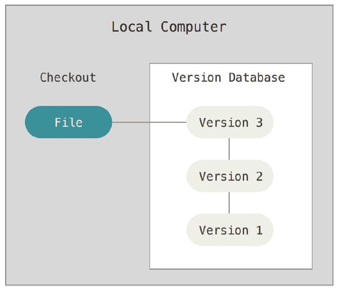
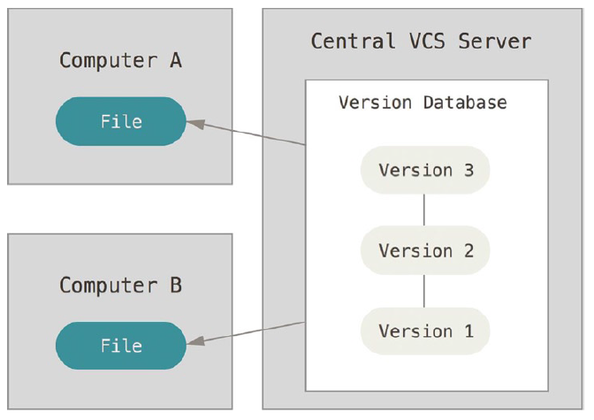
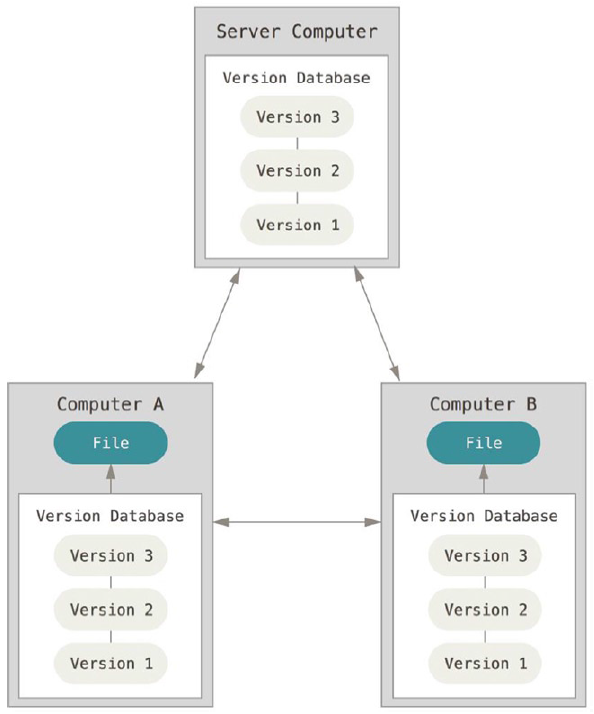

(Simon Kraft, Benjamin Ackermann)
Versionsverwaltung
z.B. SCCS, RCS
(Bild: https://rogerdudler.github.io/git-guide/index.de.html)
z.B. CVS, SVN
(Bild: https://rogerdudler.github.io/git-guide/index.de.html)
z.B. Mercurial, Git
(Bild: https://rogerdudler.github.io/git-guide/index.de.html)
Download:
https://git-scm.com/downloads
git config --global user.name "Max Mustermann"
git config --global user.email max@mustermann.de(Nur einmalig pro Rechner notwendig)
git config color.ui true
git config format.pretty onelinegit config --global alias.lg "log --color --graph
--pretty=format:'%Cred%h%Creset -%C(yellow)%d%Creset %s %Cgreen(%cr) %C(bold blue)<%an>%Creset'
--abbrev-commit"(Nur einmalig pro Rechner notwendig)
(Bild: https://rogerdudler.github.io/git-guide/index.de.html)
(Bild: https://rogerdudler.github.io/git-guide/index.de.html)
git init
git clone benutzername@host:/pfad/zum/repository
git add
git add *
git add .
git commit -m "Commit-Nachricht"
git push
git push origin master
git remote add origin < server >
git checkout -b feature_x
git checkout master
git branch -d feature_x
git push origin < branch >
git pull
git merge < branch >
git add < dateiname >
git diff < quell_branch > < ziel_branch >
git log
git checkout -- < filename >
git fetch origin
git reset --hard origin/masterhttps://rogerdudler.github.io/git-guide/
https://try.github.io/